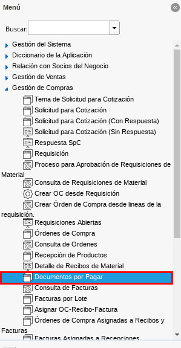
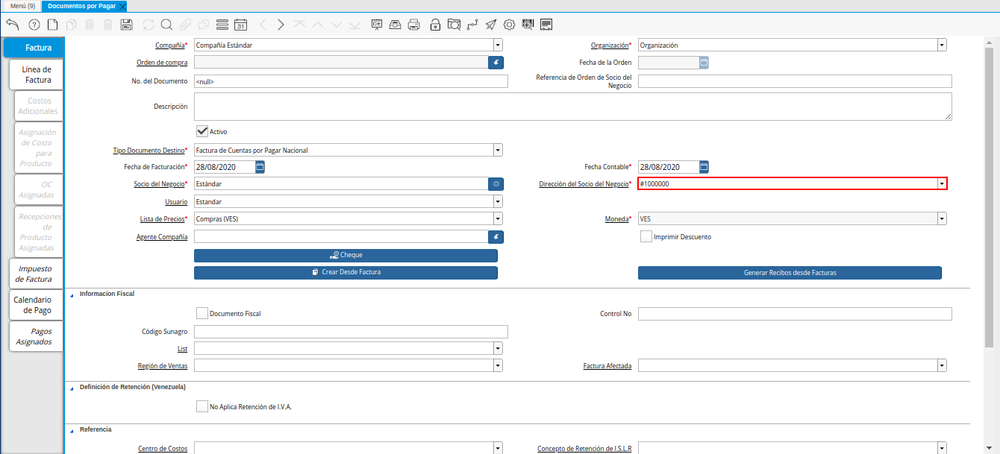
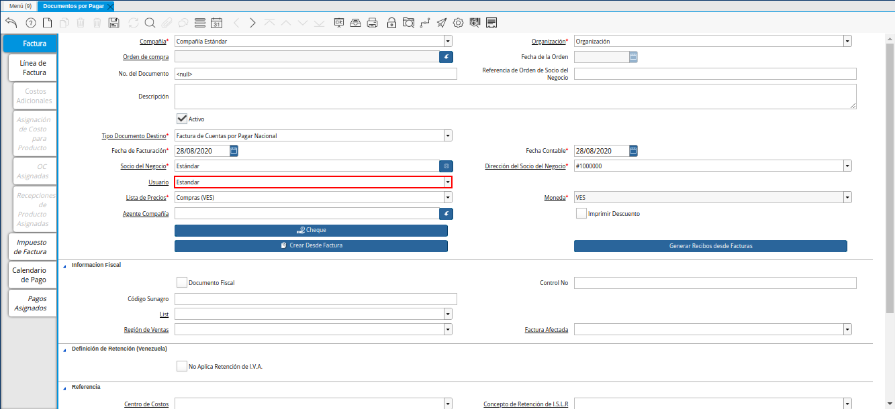
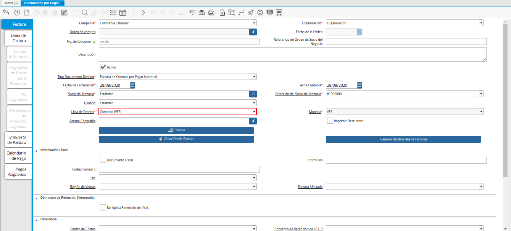
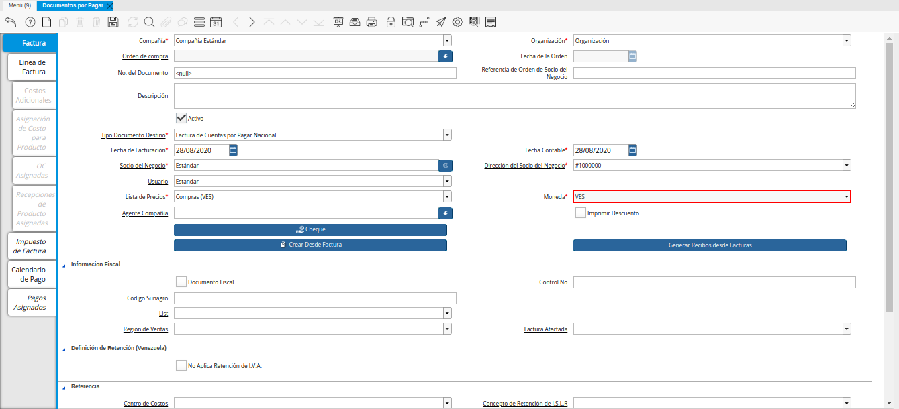
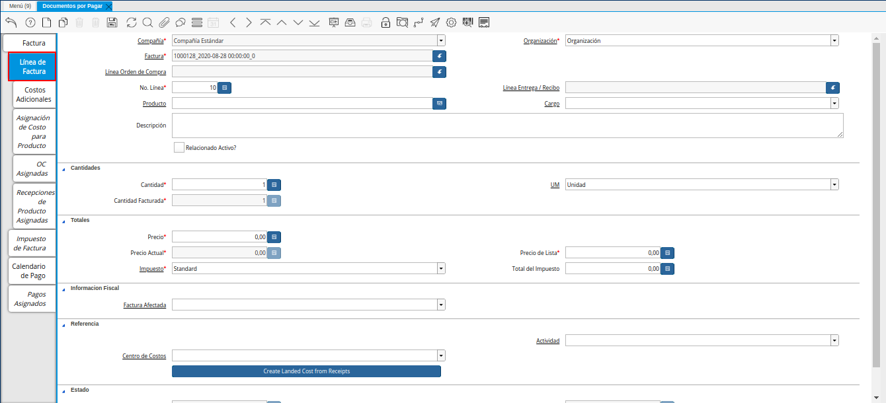

Registro de Documento por Pagar
Ubique en el menú de ADempiere, la carpeta “Gestión de Compras”, luego seleccione la ventana “Documentos por Pagar”, adjunto imagen para referencia.

Imagen 1. Menú de ADempiere
Podrá visualizar la ventana “Documentos por Pagar”, con todos los registros que contiene ADempiere referente a documentos por pagar.
Imagen 2. Ventana Documentos por Pagar
Seleccione la opción “Registro Nuevo” en la barra de herramientas de ADempiere, para crear un documento nuevo en la ventana “Documentos por Pagar”.
Imagen 2. Registro Nuevo
Seleccione en el campo “Organización”, la organización para la cual se esta realizando el documento por pagar de productos o servicios, el valor en el mismo debe ser diferente del símbolo (*).
Imagen 3. Campo Organización
En el campo “Orden de Compra”, se muestra el número de documento de la orden de compra asociada al documento por pagar.
Imagen 4. Campo Orden de Compra
En el campo “Fecha de la Orden”, se muestra la fecha contable de la orden de compra asociada al documento por pagar.
Imagen 5. Campo Fecha de la Orden
En el campo “Referencia de Orden de Socio del Negocio”, se puede ingresar la referencia de orden del socio del negocio para esta transacción específica. Frecuentemente los números de orden de compras se dan para ser impresas en las facturas como una referencia más fácil. Un número estándar puede ser definido en la ventana “Socio del Negocio (Cliente)”.
Imagen 6. Campo Referencia de Orden de Socio del Negocio
Seleccione el tipo de documento a generar en el campo “Tipo de Documento Destino”, la selección de este define el comportamiento del documento que se esta elaborando, dicho comportamiento se encuentra explicado en el documento Tipo de Documento elaborado por ERPyA.
Imagen 7. Campo Tipo de Documento
Introduzca el número del documento en el campo “No. de Documento”, el mismo no es obligatorio ya que ADempiere genera un número de secuencia automáticamente al ser guardado el registro del documento.
Imagen 8. Campo Número de Documento
Seleccione en el campo “Fecha Facturación”, la fecha que posee el documento por pagar en físico.
Imagen 9. Campo Fecha Facturación
Seleccione en el campo “Fecha Contable”, la fecha en la cual se esta realizando el documento por pagar en ADempiere.
Imagen 10. Campo Fecha Contable
Seleccione el socio del negocio proveedor en el campo “Socio del Negocio”.
Imagen 11. Campo Socio del Negocio
Podrá visualizar en el campo “Dirección del Socio del Negocio”, la dirección de localización del socio del negocio proveedor.

Imagen 12. Campo Dirección del Socio del Negocio
De igual manera, puede visualizar en el campo “Usuario”, el usuario en ADempiere del socio del negocio seleccionado anteriormente.

Imagen 13. Campo Usuario
Seleccione en el campo “Lista de Precios”, la lista de precios con la cual requiere generar el documento por pagar.

Imagen 14. Campo Lists de Precios
Podrá visualizar en el campo “Moneda”, la moneda definida para la lista de precios seleccionada.

Imagen 15. Campo Moneda
Seleccione en el campo “Agente Compañía”, el agente comercial relacionado con el documento por pagar que se encuentra realizando.
Imagen 16. Campo Agente comercial
Seleccione el checklist “Imprimir Descuento”, para indicar que el descuento será impreso en la factura y la orden.
Imagen 17. Checklist Imprimir Descuento
Seleccione la opción “Cheque”, para indicar la forma de pago que será aplicada al documento que se encuentra realizando.
Imagen 18. Opción Cheque
Seleccione la opción “Crear Desde Factura”, para crear el documento por pagar desde una una orden, autorización de devolución de material (ADM), factura o recepción en una factura.
Imagen 19. Opción Crear Desde Factura
Seleccione la opción “Generar Recibos desde Facturas”, para crear y procesar el recibo de la entrega desde la factura.
Imagen 20. Opción Generar Recibos desde Facturas
El checklist “Documento Fiscal”, indica que el registro de documento por pagar es considerado un documento fiscal y se utiliza para las facturas declaradas.
Imagen 21. Checklist Documento Fiscal
Introduzca en el campo “Control No”, el número de control fiscal establecido para el documento que se encuentra realizando.
Imagen 22. Campo Control No.
Introduzca en el campo “Código Sunagro”, el Codigo de Superintendencia Nacional de Gestión Agroalimentaria establecido para el documento que se encuentra realizando.
Imagen 23. Campo Código Sunagro
Seleccione en el campo “Lista”, la lista correspondiente al registro que se encuentra realizando.
Imagen 24. Campo Lista
Seleccione en el campo “Región de Ventas”, la región de ventas correspondiente al área de cobertura de ventas específica.
Imagen 25. Campo Región de Ventas
Seleccione en el campo “Factura Afectada”, la factura afectada para ser asignada automáticamente al registro que se encuentra realizando.
Imagen 26. Campo Factura Afectada
Seleccione el checklist “No Aplica Retención de I.V.A”, para indicar que los documentos o socios de negocio marcados con este checklist no serán procesados al momento de realizar la retención de I.V.A.
Imagen 27. Checklist No Aplica Retención de IVA
Seleccione en el campo “Centro de Costos”, el centro de costos definido para el registro que se encuentra realizando.
Imagen 28. Campo Centro de Costos
Seleccione en el campo “Concepto de Retención de ISLR”, la retención de I.S.L.R. aplicada al socio de negocio proveedor.
Imagen 29. Campo Concepto de Retención de ISLR
Seleccione en el campo “Actividad”, la actividad o tarea que es ejecutada en el curso de un negocio para ser usada en el costeo de la misma.
Imagen 30. Campo Actividad
Seleccione en el campo “Retención de Terceros”, la retención correspondiente al registro que se encuentra realizando.
Imagen 31. Campo Retención de Terceros


Seleccione el icono “Guardar” de la barra de herramientas de ADempiere, para guardar los cambios realizados.
Imagen 32. Guardar Cambios
Línea de la Factura
Seleccione la pestaña “Línea de Factura” y proceda al llenado de los campos correspondientes.

Imagen 33. Línea de Factura
Podrá visualizar en el campo “Factura”, el número de registro del documento por pagar al que pertenece la línea que se encuentra realizando.
Imagen 34. Campo Factura
Si el registro de documento por pagar es realizado desde una orden de compra, podrá visualizar en el campo “Línea Orden de Compra”, la línea de la orden de compra asociada al mismo.
Imagen 35. Campo Línea Orden de Compra
De igual manera, podrá visualizar en el campo “No. Línea”, el número de línea correspondiente al registro en el cual se encuentra ubicado.
Imagen 36. Campo No. Línea
Si el registro de documento por pagar es realizado desde un recibo de entrega, podrá visualizar en el campo “Línea Entrega Recibo”, la línea de la entrega asociada al mismo.
Imagen 37. Campo Línea Entrega Recibo
Seleccione en el campo “Producto”, el producto o servicio comprado por el cual se encuentra realizando el documento por pagar.
Imagen 38. Campo Producto
Seleccione en el campo “Cargo”, el cargo por el cual se encuentra realizando el documento por pagar.
Imagen 39. Campo Cargo
Introduzca en el campo “Descripción”, una breve descripción referente al registro que se encuentra realizando.
Imagen 40. Campo Descripción
Seleccione el checklist “Relacionado Activo”, para indicar que el registro se encuentra relacionado con un activo fijo.
Imagen 41. Checklist Relacionado Activo
Note
Al tildar el checklist “Relacionado Activo”, se habilitan los campos “Capital vs Gastos” y “Activo Fijo”.
Seleccione en el campo “Capital vs Gasto”, si el registro que se encuentra realizando es por capital o gasto.
Imagen 42. Campo Capital o Gasto
Seleccione en el campo “Activo Fijo”, el activo fijo involucrado en el registro que se encuentra realizando.
Imagen 43. Campo Activo Fijo
Seleccione en el campo “Cantidad”, la cantidad comprada del producto seleccionado.
Imagen 44. Campo Cantidad
Seleccione en el campo “UM”, la unidad de medida del producto seleccionado.
Imagen 45. Campo UM
Podrá visualizar en el campo “Cantidad Facturada”, la cantidad factura del producto seleccionado.
Imagen 46. Campo Cantidad Facturada
Introduzca en el campo “Precio”, el precio real del producto.
Imagen 47. Campo Precio
Note
El precio ingreso es convertido al precio real basado en la conversión de la unidad de medida seleccionada en el campo “UM”.
Podrá visualizar en el campo “Precio Actual”, el precio unitario del producto.
Imagen 48. Campo Precio
Note
El precio actual indica el precio para un producto en la moneda fuente.
Introduzca en el campo “Precio de Lista”, el precio oficial del producto.
Imagen 49. Campo Precio de Lista
Note
El precio actual indica el precio oficial para un producto en la moneda fuente.
Seleccione en el campo “Impuesto”, el impuesto a aplicar al registro o línea de registro que se encuentra realizando.
Imagen 50. Campo Impuesto
Podrá visualizar en el campo “Total del Impuesto”, el total del impuesto a aplicar al registro o línea de registro que se encuentra realizando.
Imagen 51. Campo Total del Impuesto
Seleccione en el campo “Factura Afectada”, la factura afectada para ser asignada automáticamente al registro que se encuentra realizando.
Imagen 52. Campo Factura Afectada
Seleccione en el campo “Actividad”, la actividad o tarea que es ejecutada en el curso de un negocio para ser usada en el costeo de la misma.
Imagen 53. Campo Actividad
Seleccione en el campo “Centro de Costo”, el centro de costos definido para el registro que se encuentra realizando.
Imagen 54. Campo Centro de Costo
Seleccione la opción “Crear Costo de Entrega a partir de Recibos”, para crear el costo de la entrega a partir de los recibos.
Imagen 55. Opción Crear Costo de Entrega a partir de Recibos
Podra visualizar en el campo “Neto de Línea”, el total neto de la línea basado en la cantidad y el precio actual.
Imagen 56. Campo Neto de Línea
Note
El total neto de la línea se obtiene de la operación (Cantidad * Precio Actual) sin fletes ni cargos. Cualquier cargo adicional o flete no es incluido.
De igual manera, podrá visualizar en el campo “Total de la Línea”, la cantidad total de la línea con los impuestos incluidos
Imagen 57. Campo Total de la Línea
Note
El total de la línea se obtiene de la operación (Neto de Línea + Total del Impuesto).


Guarde el registro de los campos seleccionando el icono “Guardar Cambios” ubicado en la barra de herramientas de ADempiere.
Imagen 58. Guardar Cambios
Regrese a la ventana principal “Factura”, ubicando la parte inferior del documento por pagar.
Imagen 59. Opción Completar

Podrá visualizar en el campo “Total de Líneas”, la sumatoria total de todos los netos de línea sin impuestos ni cargos, que contiene el documento por pagar.
Imagen 60. Campo Total de Líneas

De igual manera, podrá visualizar en el campo “Gran Total”, la sumatoria de todos los montos reflejados en el campo “Total de la Línea”, de todas las líneas que contiene el documento por pagar.
Imagen 61. Campo Gran Total
Note
El gran total identifica el total incluyendo impuestos y totales de fletes en la moneda del documento.

Seleccione la opción “Completar”, ubicada en la parte inferior derecha del documento.
Imagen 62. Opción Completar

Seleccione la acción “Completar” y la opción “OK” para completar el documento.
Imagen 63. Acción Completar Documento